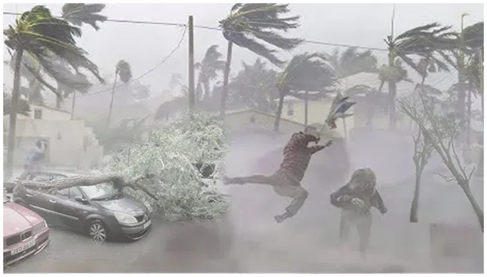
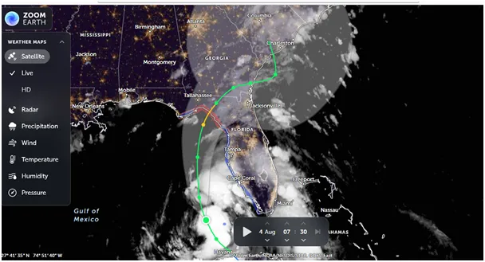
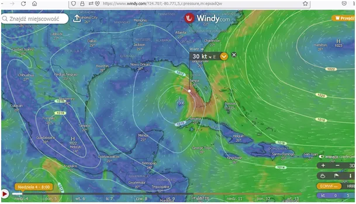

Wszechświat to układ sił, które dążą do wyrównania.
W niedzielny poranek 4 sierpnia 2024 r. wiadomo, że Debby, bo takie imię dostał karaibski sztorm, jutro o 14:00 stanie się huraganem i będzie wiał 140 km/h. Tymczasem jest to tylko 75 km/h, ale nad całą Florydą leje i wieje. Ameryka jest duża i ma potężne zjawiska pogodowe. Wynika to z jej położenia. Ocean w okolicach Florydy ma ponad 32 st. C, a na północy w okolicach Bostonu tylko 20 st. C.

Einstein mawiał, że "wszechświat to układ sił, które dążą do wyrównania" i wszystko, co obserwujemy to proces wyrównywania rozkładu skupienia energii. Ciepło, które Słońce dostarcza do oceanów strefy międzyzwrotnikowej ma tendencje do ogrzania obszarów chłodniejszych. Wszystkie cząstki o temperaturze powyżej 0 K (Kelwinów) promieniują w podczerwieni, czyli oddają ciepło. Każde ciało chłodniejsze ogrzewa też ciało cieplejsze, ale robi to wolniej, niż przepływ przeciwny, więc bilans jest taki, że układ dąży do wyrównania temperatur. Głównym kanałem wymiany energii jest układ oceany-Kosmos, z wyłączeniem Słońca, które jest dla nas źródłem energii. Przepływ ten stale trwa w kierunku Kosmosu, ale pośrednikiem jest atmosfera, stąd tak ciekawe rzeczy dzieją się wokół nas.

Dziś nikt nie wie, czy cyklon po tym jak z Zatoki Meksykańskiej przejdzie na otwarty ocean wróci na kontynent, czy skieruje się na północ nad oceanem wzdłuż wybrzeża. Od tego zależy, czy zmiany pogody w Europie nastąpią za tydzień, czy za dwa tygodnie. Dlatego z paluszkami dowolnej firmy przyglądamy się co on zrobi w środę.
Paweł Klimczewski